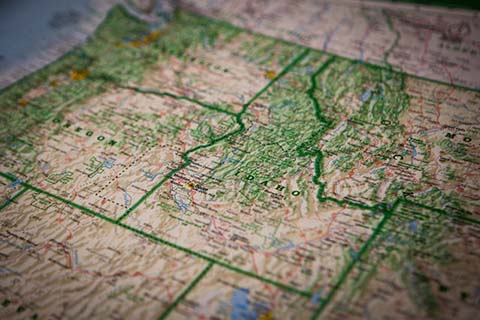

The Weather Watcher
Watching the Weather So You Don't Have To
≡ Menu
Home
Preston
Soda Springs
Fish Haven
Storm Center
Gallery
Attributions
Weather Data:
OpenWeather
Stock Photos:
Free Images
Stock Idaho Map Photo:
Pexels
Fonts:
Google Fonts
Main Icon:
Icon Finder

The Weather Watcher
30 N 1st E
Preston, ID 83263
☎ 208.555.5555
✉ weather@theweatherwatcher.com